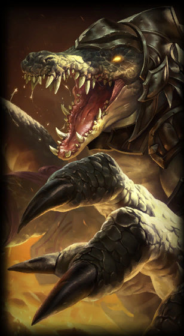

Renekton
the Butcher of the Sands
Class :
Fighter, Tank
Lore :
Renekton is a terrifying, rage-fueled Ascended being from the scorched deserts of Shurima. Once, he was his empire's most esteemed warrior, leading the nation's armies to countless victories. However, after the empire's fall, Renekton was entombed beneath the sands, and slowly, as the world turned and changed, he succumbed to insanity. Now free once more, he is utterly consumed with finding and killing his brother, Nasus, who he blames, in his madness, for the centuries he spent in darkness.
Stats :
| Health | Health per level | Mana | Mana per level | Movement speed | Armor | Armor per level | MR | MR per level | Range | HP regen | HP regen per level | Mana regen | Mana regen per level | Crit | Crit per level | AD | AD per level | AS per level | AS |
|---|---|---|---|---|---|---|---|---|---|---|---|---|---|---|---|---|---|---|---|
| 575 | 87 | 100 | 0 | 345 | 35 | 4 | 32 | 1.25 | 125 | 8 | 0.75 | 0 | 0 | 0 | 0 | 69 | 3.75 | 2.75 | 0.665 |

Passive : Reign of Anger
Renekton's attacks generate Fury, increased when he is low on life. This Fury can empower his abilities with bonus effects.